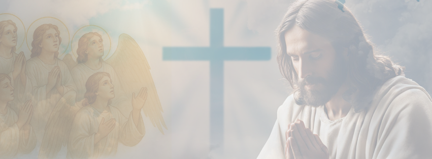

Apocalipse 12
A Saga de Simão pai de João
No mais longínquo tempo
Uma guerra já existia
Era a guerra dos santos anjos
Contra os ministros em anarquia
Mas como assim ocorreu
Tão temível guerra
Era disputa pelo trono de Deus
E pelo domínio da Terra
Foi século e mais século
Dos confrontos mais sinistros
Logo Deus já estava incrédulo
De recuperar seus ministros
Eles se voltaram contra O Senhor
E a Lúcifer leais ficaram
E depois de um tempo de dor
Os anjos de Deus logo ganharam
Mas apenas o Céu
O decaído ministro perdeu
E para a Terra assim o réu
Foi influenciar os filhos de Deus
Dessa forma a tentação
Chegou no santo paraíso
Que Deus fizera para Adão
Que pelo pecado perdera o juízo
Dessa forma assim o homem
Foi expulso dos jardins
Que Deus criou com o Amor que tem
E com a ajuda dos Serafins
E ao trabalho logo Adão
Pelo Senhor foi condenado
E assim o homem viveu até então
Para pagar o seus pecados
Mas a tentação continuou
Continuou reinando na Terra
Causando destruição e terror
E culminando em guerra
E assim ela reina
Com aqueles que querem poder
Além de dinheiro e de glória
Tudo que puderem ter
Mas lá no Céu existe também
Os anjos tementes a Deus
Que vivem a ajudar o homem
Que não são mais ateus
E de uma mulher assim nasceu
Um filho bem querido
Que de Simão foi batizado
E cuidado com muito juízo
Ele cresceu em inteligência
Mas pras tentações ele cedeu
E com pouca sabedoria
Parecia perdido de Deus
Mas sua mãe sempre rezava
Aquelas duzentas rosinhas
Para cada filho seu
Para ser de Deus com alegria
E num conflito ele se deu
Pois ficava com os pés em duas regiões
Queria ser de Deus
Mas sucumbia com os pagões
Até que um dia num delírio
Ele perdeu um pouco a razão
Abriu os olhos de uma vez
E não registiu a pressão
Recuperou-se depois de um tempo
Continuava temente a Deus
Mas pensava em luxúria e riqueza
Que parecia ser normal
Mas lhe trazia uma profunda tristeza
E escravizava o seu Espírito
Queria falar de Deus
Mas tinha medo das respostas
Ainda não tinha as forças
Necessárias para guardar as costas
Com o tempo ficou mais forte
Fortaleceu a sua mente
Não teve medo mais da morte
E muito menos de qualquer ente
Hoje assim se profetizou
Na sua vida o que João dizia
Que tentariam devorar o seu filho
Mas arrebatado assim por Deus seria
Será que João filho de Simão
Arrebatado por Deus mesmo foi
Parece que numa projeção
A serpende quase o dominou
Mas seus ministros (ministros de Simão e não de Lúcifer)
consiguiram rapidamente resgatar
O menino que a serpente tentou engolir
Mas ficou a entalar
E logo pois-se a cuspir
E para o Céu João foi arrebatado
E Simão para o deserto de 1260 dias foi levado
E agora está tudo do aguardo